summary
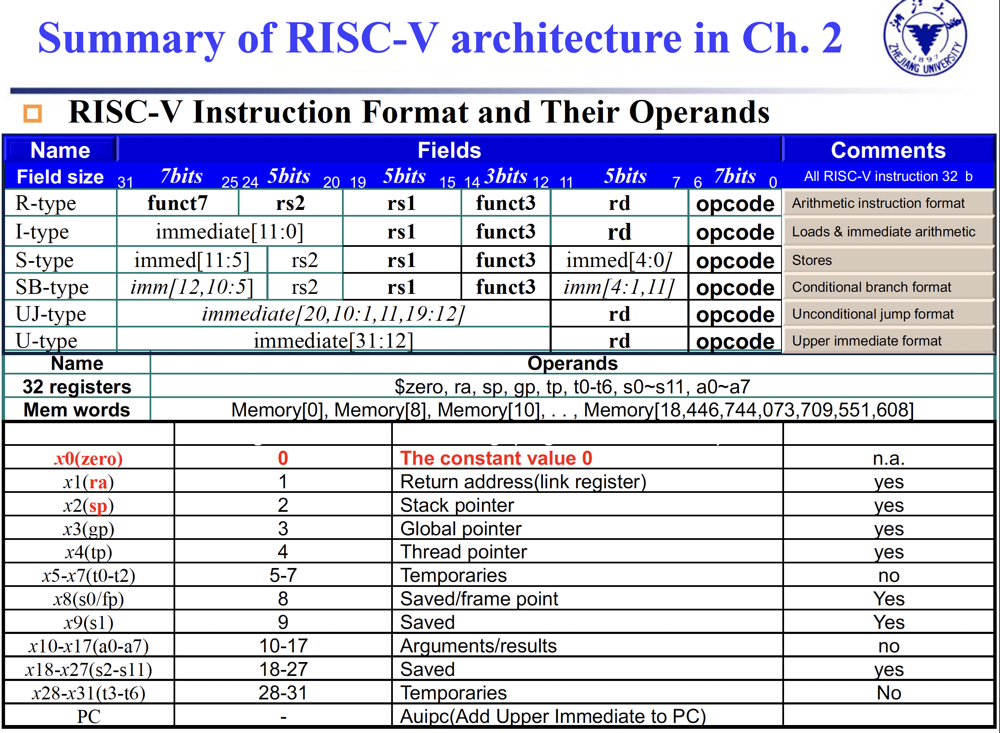
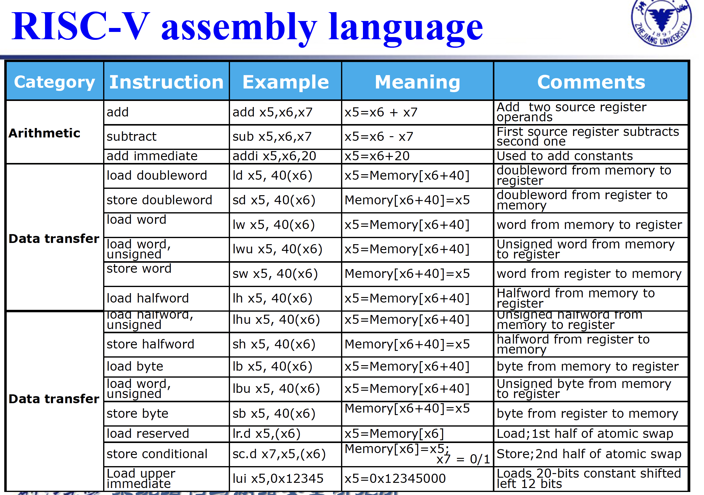 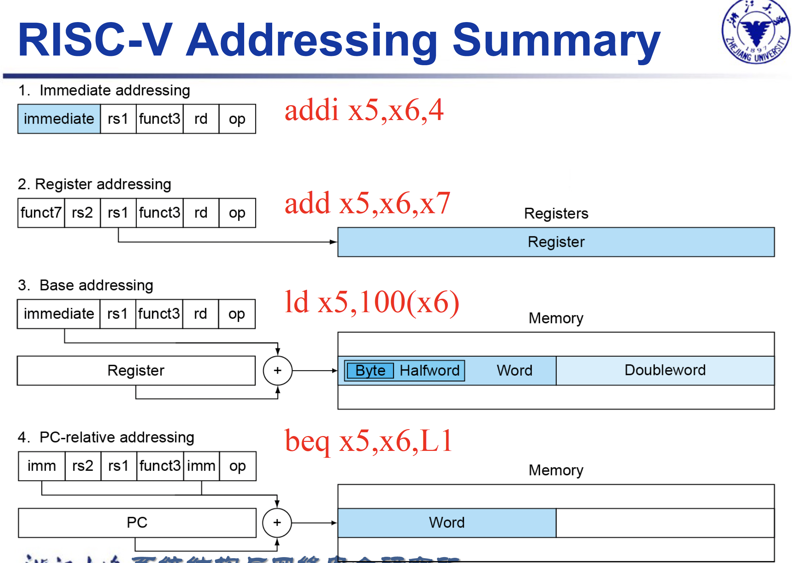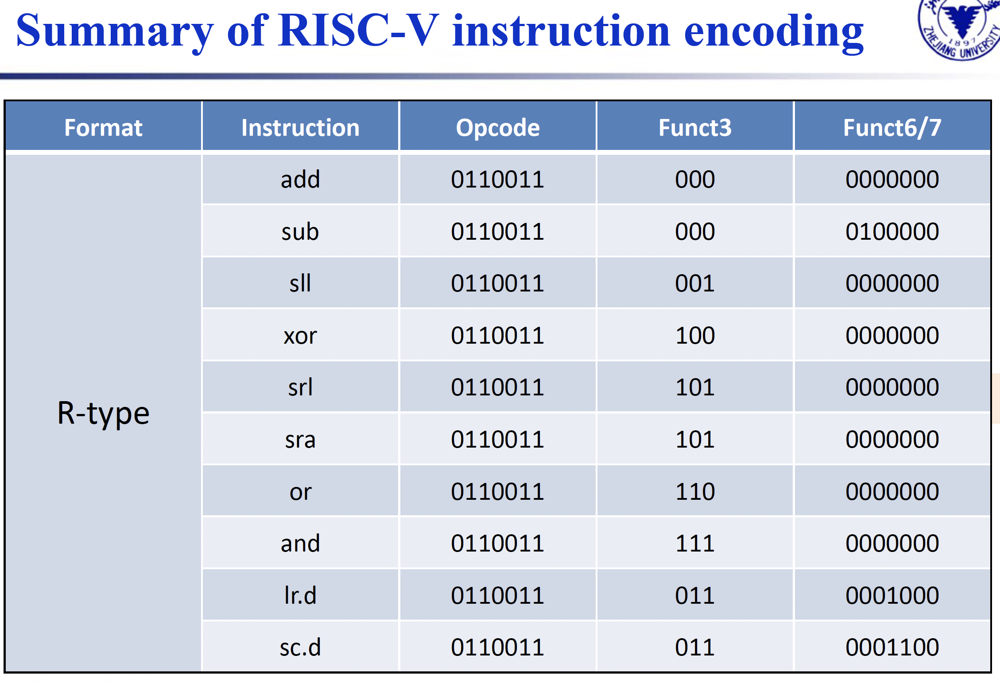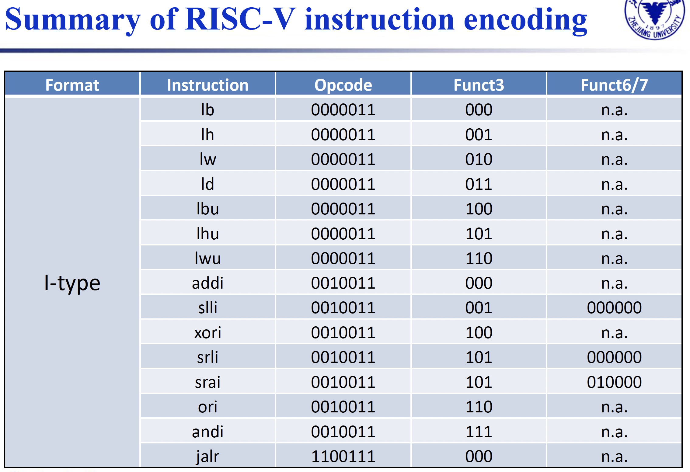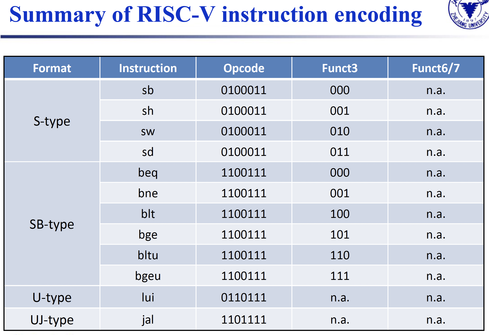
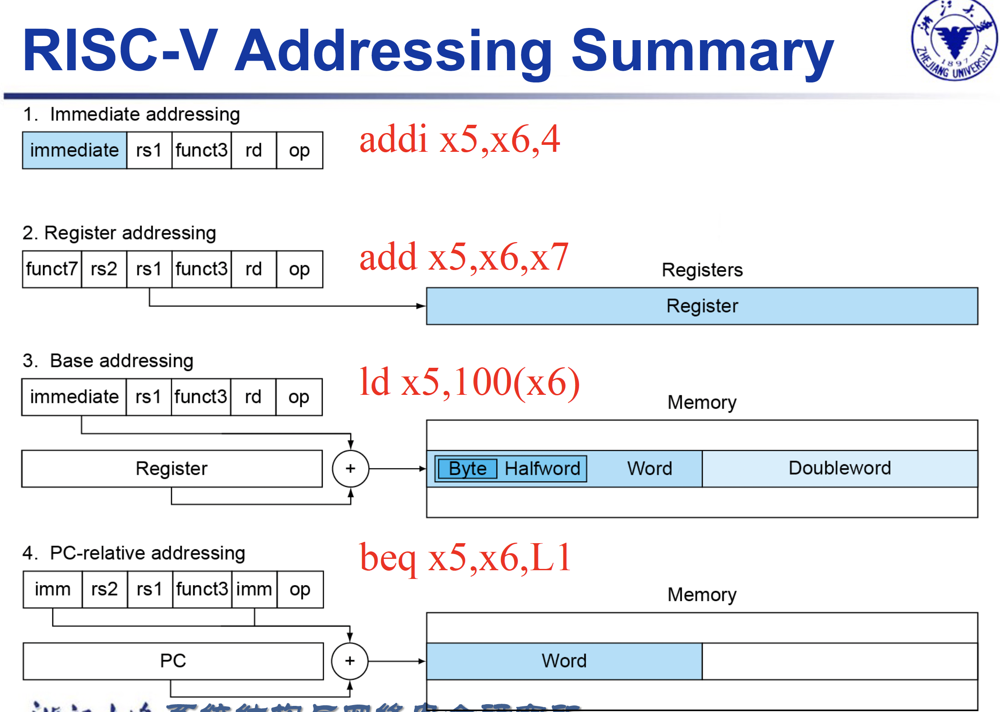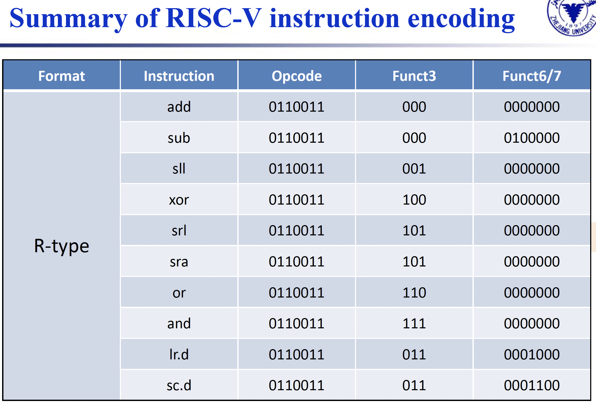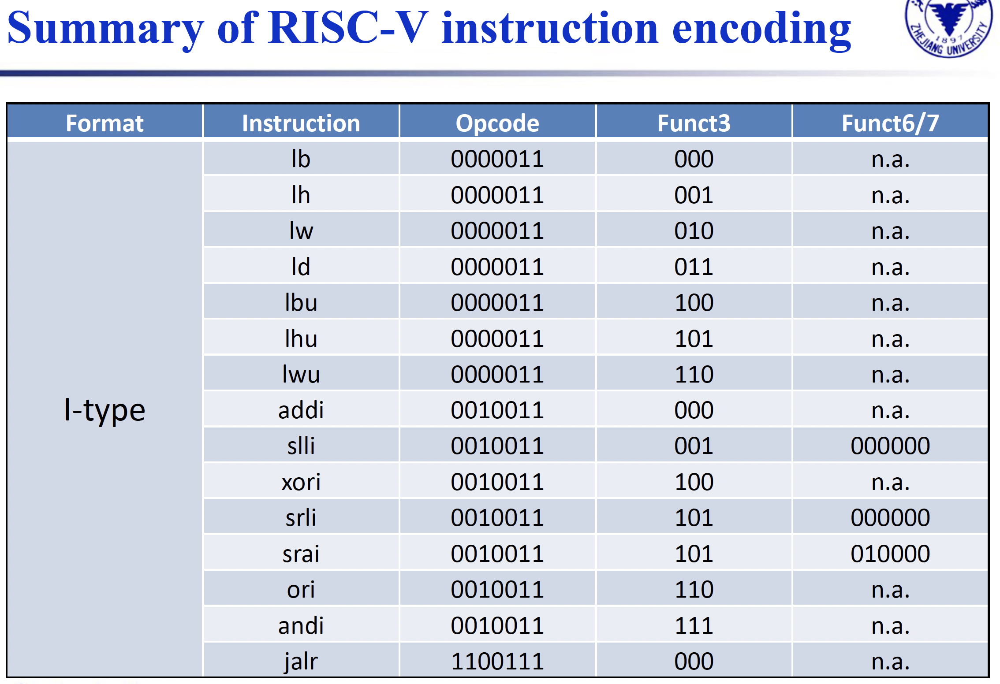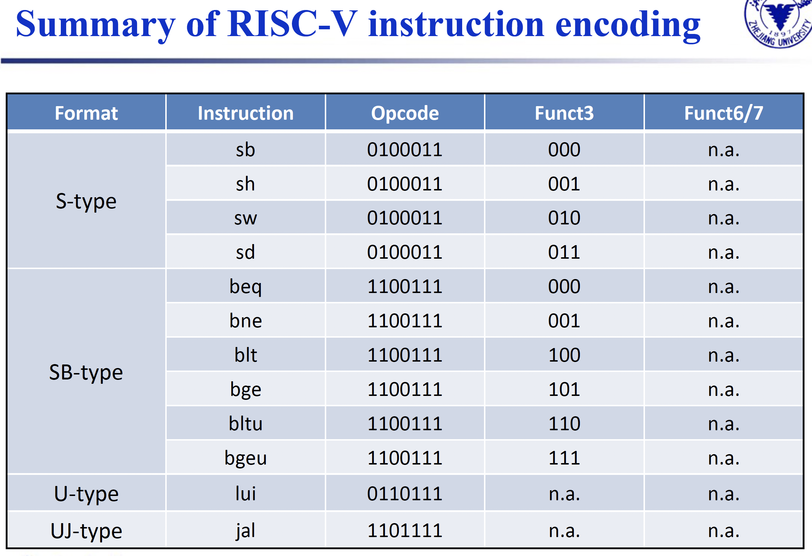
寄存器 registers flashcard
- RISC-V architecture 提供 32 个数据寄存器，分别命名为
x0~x31，每个寄存器的大小是64位。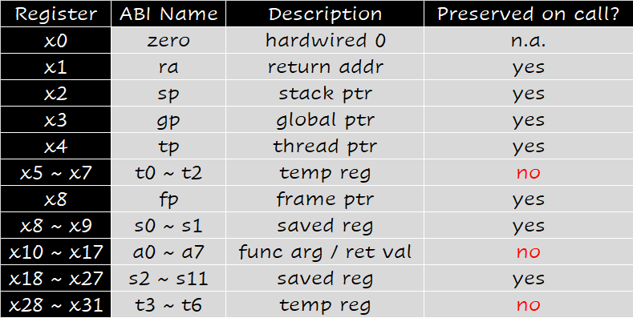x0的值恒为 0- Preserved on call 意为是否保证调用前后这些寄存器的值不变。
- 也提供一系列浮点数寄存器
f0~f31。 - 之所以寄存器的个数不多，是因为过多的寄存器会增加电子信号的传播距离，从而导致时钟周期的延长。
- 将不常用的（或之后用到的）变量存入内存的过程被称为溢出寄存器 (Spilling Register)
- 寄存器存储空间小，内存存储空间大 因此小规模的数据会放在寄存器内，而更大规模的数据则会存储在计算机的内存(memory) 中
- 各种操作与运算都只能在寄存器内完成
- 寄存器有着更快的运行速度和更高的吞吐量，使得访问寄存器内的数据更加迅速和方便，且访问寄存器的能耗更低；而访问内存需要
load和store指令，那么就需要执行更多的指令
字节地址 flashcard
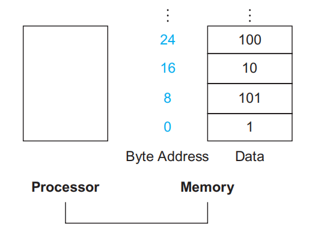
- ==在 RISC-V architecture 中，一个 word 为 32 位（4Bytes ），一个 doubleword 为 64 位（8Bytes ）。==
- RISC-V architecture 的地址是 64 位的，地址为字节地址，因此总共可以寻址2的64次方个字节，即2的61次方个 dword ，因为一个 dword 占3位（8Bytes用3个字节地址位表示）。
- 如果想操作某一个 bit（比如把第 3 个 bit 从 0 改成 1 ），CPU 必须：
- 读取 (Read)：先把这个 bit 所在的整个字节（整个房间）的数据（8个 bits）全部取到 CPU 寄存器中。
- 修改 (Modify)：在 CPU 内部，使用位运算（比如
OR运算）来单独修改那 1 个 bit，而其他 7 个 bit 保持不变。 - 写回 (Write)：把修改后的整个字节（8个 bits）再存回到原来的内存地址
- 如果想操作某一个 bit（比如把第 3 个 bit 从 0 改成 1 ），CPU 必须：
寻址 flashcard
- 在一些 architecture 中，word 的起始地址必须是 word 大小的整倍数，dword 也一样，这种要求称为 alignment restriction。
- RISC-V 允许不对齐的寻址，但是效率会低。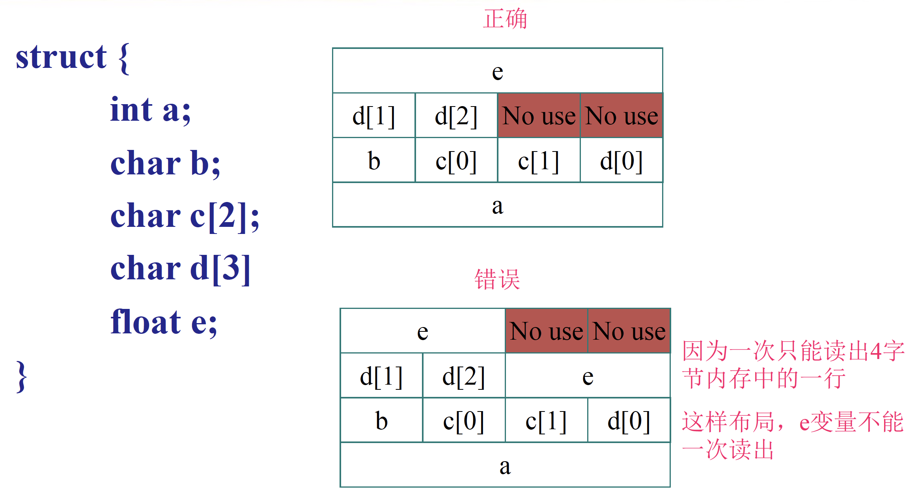
- 一次只能读出4字节内存中的一行
- RISC-V 支持
- 立即数寻址 (
lui) - 间接寻址 (
jalr) - 基址寻址 (
8(sp))： - PC relative 寻址：分支地址为PC和分支偏移量（立即数的2倍）之和
- 因为所有合法的指令必须存放在偶数内存地址【指令：16bit（压缩指令）/32bit 】因此最低位始终为0，因此为了优化，指令中会略去最后一个0
- 把存储的
immediate还原成真正的Branch offset
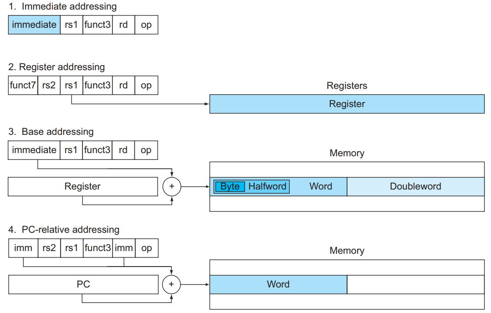
- 立即数寻址 (
大小端 flashcard
- RISC-V 使用 little endian 小端编址。也就是说，当我们从 0x1000 这个地址读出一个 dword 时，我们读到的实际上是 0x1000~0x1007 这 8 个字节，并将 0x1000 存入寄存器低位，0x1007 存入高位。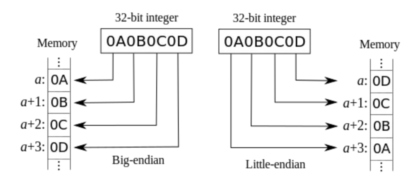
- 存储字节 0x88 就是 bit：10001000
- 大小端只关心字节的顺序，不关心字节内部bit的顺序
补码 2’s complement flashcard
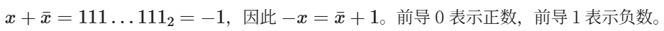
因此在将不足 64 位的数据载入寄存器时
- 如果数据是无符号数，只需要使用 0 将寄存器的其他部分填充 (zero extension)
- 指令中的
lwu,lhu,lbu使用zero extension。
- 指令中的
- 而如果是有符号数，则需要用最高位即符号位填充剩余部分，称为符号扩展 (sign extension)。
- 指令中的
lw,lh,lb使用sign extension
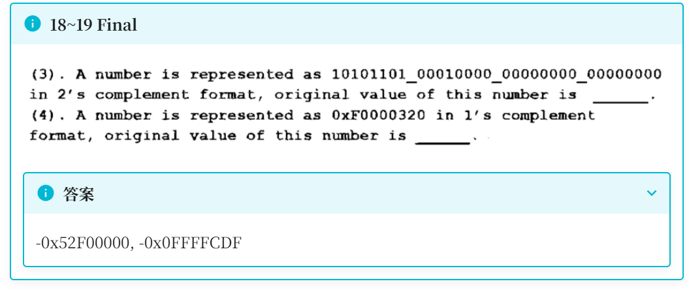
- 指令中的
- 对于补码先看符号位，负数的话就对数字部分做补码还原，还是取反加一。
- 1’scomplement是反码，先看符号位，负数就对数字部分做反码还原，取反即可
指令
设计准则
正则化 simplicity favors regularity 简化规范
越小越快 smaller is faster 32个通用寄存器 32*64bit
指令
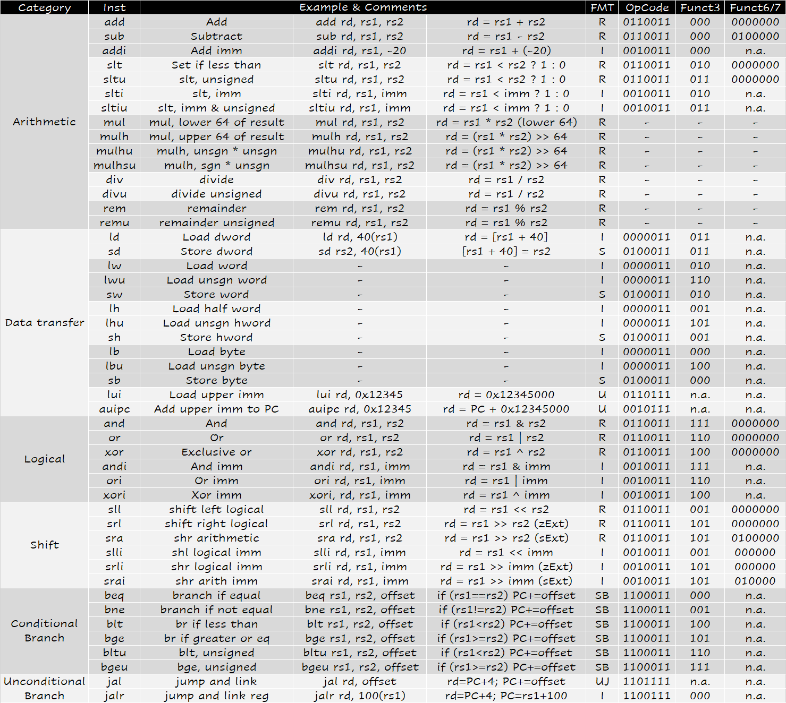
Arithmetic
- 加法
add：寄存器 1 + 寄存器 2
|add reg1, reg2, reg3 // (in C) reg1 = reg2 + reg3|addi(Add Immediate)：寄存器 + 常量
|addi reg1, reg2, const // (in C) reg1 = reg2 + const|
- 减法
sub：寄存器 1 - 寄存器 2
|sub reg1, reg2, reg3 // (in C) reg1 = reg2 - reg3|- ==注意：没有
subi，但是可以通过addi一个负常数来实现==
Logical Operations
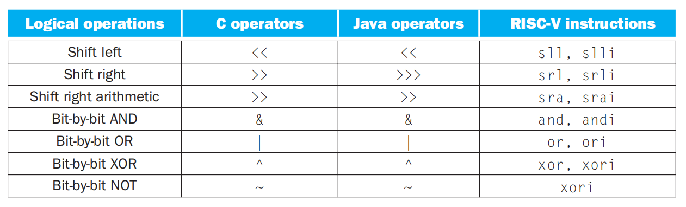
sll/slli，srl/srli分别为逻辑左移/右移- 左移i位相当于乘以2的i次方，右移i位相当于整除2的i次方
- 逻辑右移时最左边补 0
- 不带
i的指令表示根据寄存器的值确定移动位数，带i的指令表示用立即数确定移动位数
|slli x11, x19, 4 // reg x11 = reg x19 << 4 bits|
sra/srai为算术右移，最左边补符号位
Bit Operations
|and reg1, reg2, reg3 // (in C) reg1 = reg2 & reg3`|
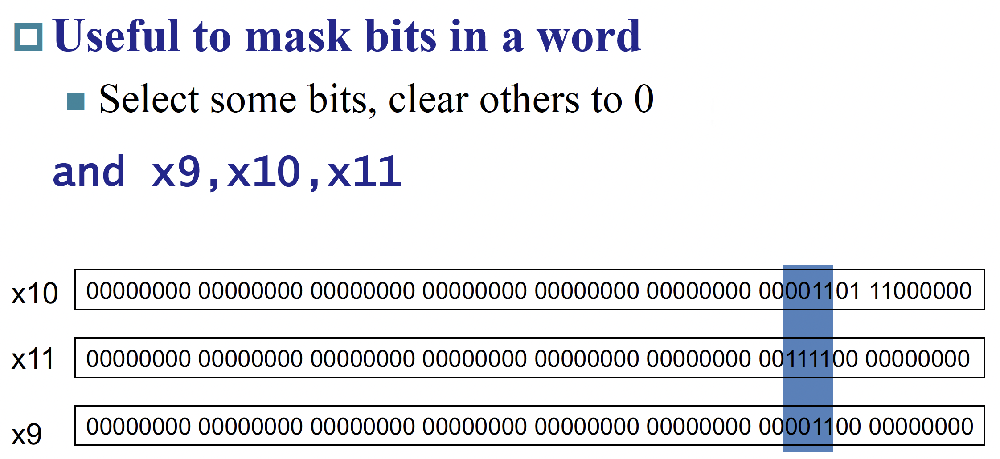
|or reg1, reg2, reg3 // (in C) reg1 = reg2 | reg3`|
- AND、OR、XOR 也有立即数版本的指令，分别为：
andi、ori和xori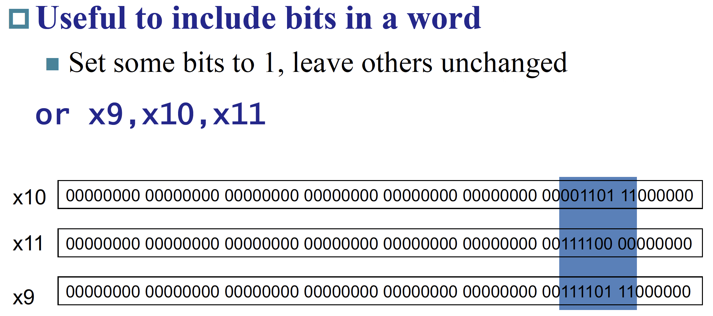
|xor reg1, reg2, reg3 `|
- RISC-V 中没有 NOT 指令，因为它可以通过异或表示出来：任何数与 111…111 异或的结果即为该数取反后的结果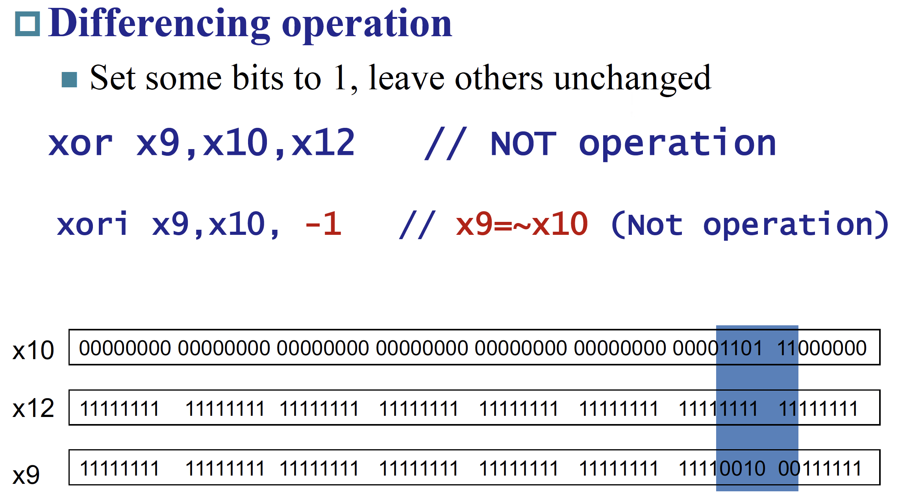
Making Decisions
计算机与计算器的一大不同之处在于计算机具备决策的能力：它能够执行分支（条件）语句、循环语句等。
在 RISC-V 汇编语言中，关于决策的指令格式均为：inst rs1, rs2, L1
- 其中
rs1、rs2是寄存器 L1是标签（跳转位置，也可以是立即数 imm，表示跳转到 PC+imm 的指令）inst是指令，比较的是补码值。/0
其分类如下：
- 条件分支(conditional branch)：先检测值，根据检测结果决定是否将控制权转交给新地址上的语句的一类指令
- 无条件分支(unconditional branch)：条件恒为真的条件分支，因此该语句一定会执行
有以下几种可用指令：
beq(Branch If Equal)：如果寄存器rs1和rs2的值相等，那么跳转至带标签L1的语句bne(Branch If Not Equal)：如果寄存器rs1和rs2的值不相等，那么跳转至带标签L1的语句blt(Branch If Less Than)：如果寄存器rs1的值小于rs2的值，那么跳转至带标签L1的语句bltu：无符号版本 unsigned 比如存的是地址，就只能用bltu当作无符号数来比较，否则会引入符号位。【如果高位地址用不上也不容易出错，如果地址比较大就一定要bltu】
bge(Branch If Greater Than or Equal)：如果寄存器rs1的值大于等于rs2的值，那么跳转至带标签L1的语句bgeu：无符号版本 unsigned
if
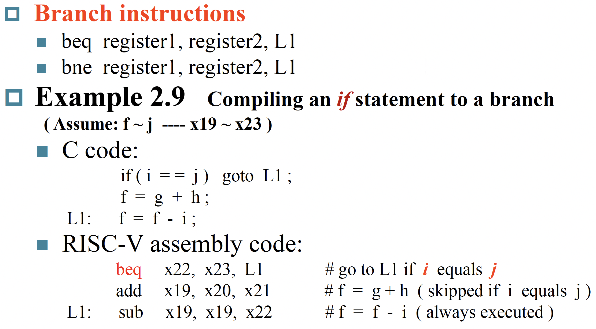
if-else
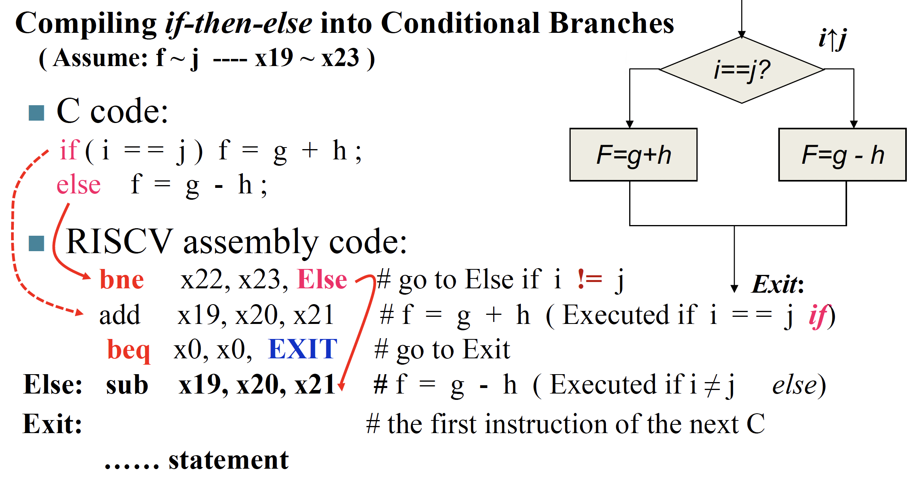
case-switch
对于case/switch语句，我们可以使用一张放有可选指令序列地址的表格（称为分支地址表，Branch Address Table），这样的话程序就可以根据条件判断的结果，通过表格的索引找到合适的指令序列。
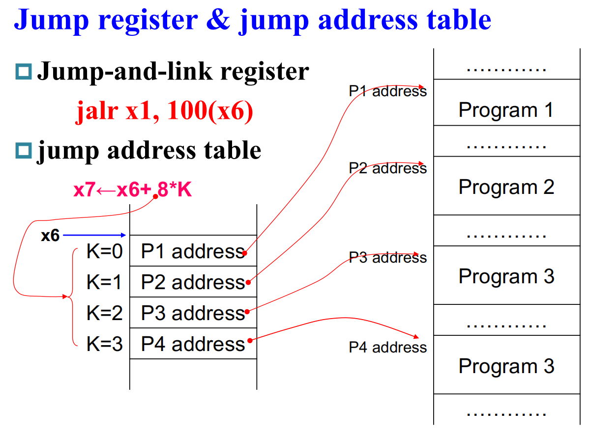

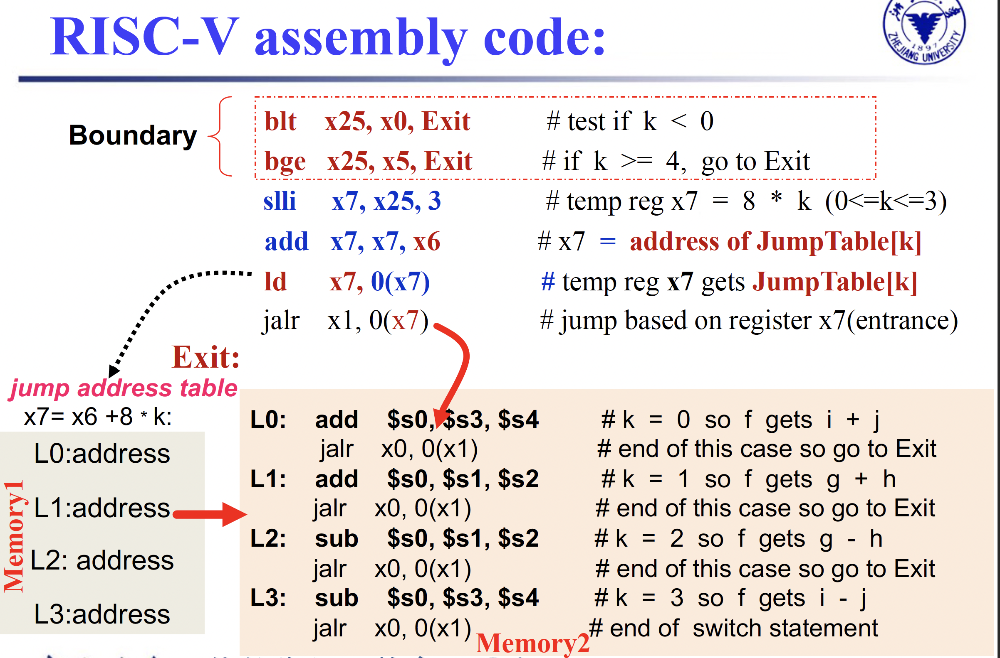
loops
- 循环访问数组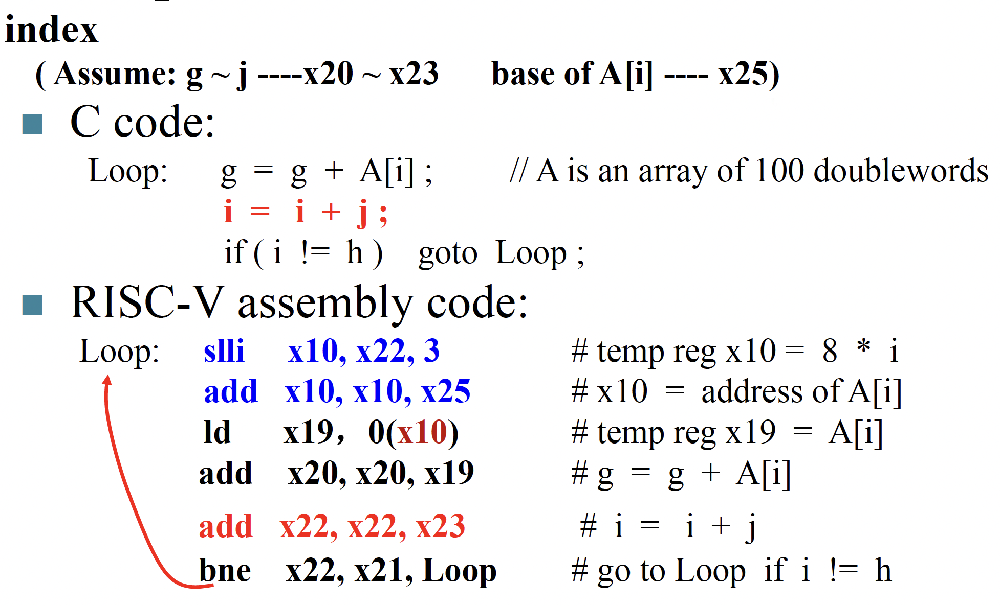
- while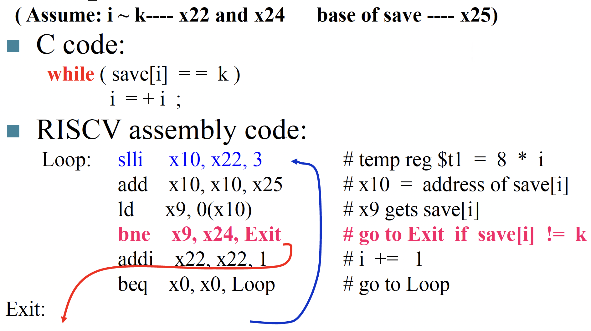
set on less than
slt x5, x19, x20
如果 x19<x20，那么将 x5 赋值为 1
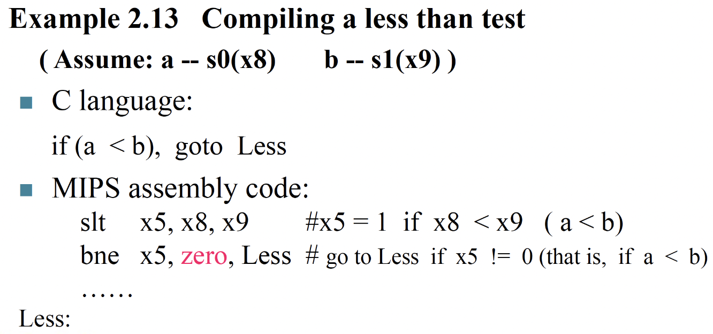
Data Transfer Instructions
由于对数据的各种操作只能在寄存器内完成，而无法在内存中实现，因此数据需要再寄存器和内存之间来回传递，来完成这一传递操作的指令被称为数据传输指令
RISC-V 有以下数据传输指令：
ld（Load Doubleword）：加载指令，将数据从内存拷贝到寄存器当中
|ld reg, offset(mem_base_addr)|- reg: 寄存器
- mem_base_addr: 一个保存内存基础地址的寄存器（可以理解为能访问到整个内存的头指针）
- offset: 偏移量，是一个常数
- 内存数据的实际地址 =
mem_base_addr + offset
sd（Store Doubleword）：存储指令，将寄存器的数据拷贝到内存中
|`sd reg, offset(mem_base_addr) |- reg: 寄存器
- mem_base_addr: 内存基础地址寄存器
- offset: 偏移量
lbu(Load Byte Unsigned)：加载 1 字节的数据，并看作无符号数lb(Load Byte)：lbu的有符号数版本
在 RISC 指令集中，只有 load 系列和 store 系列指令能够访问内存。
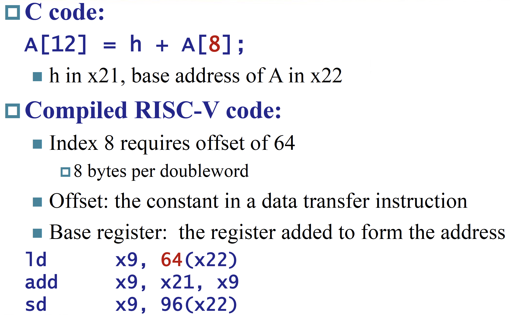
立即数 Constant or Immediate Operands
- 一般的做法是将常数保存在一个寄存器当中，通过一个地址指针指向这个寄存器，然后通过
add指令实现加法操作
|ld x9, AddrConstant4(x3) //x9 = constant 4 add x22, x22, x9| - 实际上我们可以引入一个新的概念：立即数（Immediate），这样就避免了加载指令（即通过操作
addi x22, x22, 4即可实现）
同步Synchronization in RISC-V
假设两个处理器在同一片内存空间中工作，并且它们的工作顺序为：P1写入数据后，P2再读取数据。没有同步（Synchoronize）好，那么就会产生数据竞争（Data Race）的问题（结果取决于访问顺序，因此这个结果就是不确定的）。
避免这一问题的方法是原子读取 / 写入 (Atomic Read/Write) 内存操作，这种操作确保读和写之间不会有任何访问这块内存空间的行为。
有些处理器有专门实现原子操作的指令，比如原子交换 (Atomic Swap/Exchange)（实现寄存器和内存数据的交换）等。而 RISC-V 提供了一个指令对 (Instruction Pair) lr.d和sc.d：
lr.d（Load-Reserved Doubleword）：lr.d rd, (rs1)将存储在寄存器rs1的内存地址上的数据加载到寄存器rd上，同时保留这块内存地址，除sc.d的其他指令不应该访问这块地址
sc.d（Store-Conditional Doubleword）：sc.d rd, rs1, (rs2)将寄存器rs1上的数据放入存储在寄存器rs2的内存地址上，并且由寄存器rd指示该指令是否成功：若成功，则rd = 0，否则rd为一个非零值（表示有其他指令访问过这块内存空间）
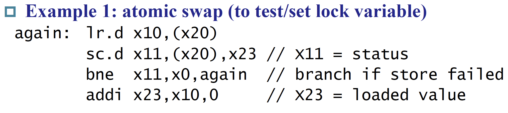
其他
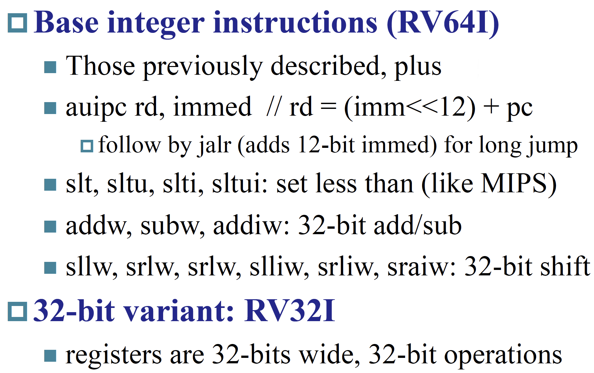
拓展指令集内容：
- M：与乘除法相关的指令
- A：原子运算，包括前面提到过的
lr.d和sc.d指令，以及它们的 32 位版本lr.w和sc.w等 - F：单精度浮点运算相关指令
- D：双精度浮点运算相关指令
- C：压缩的指令，只有 16 位宽
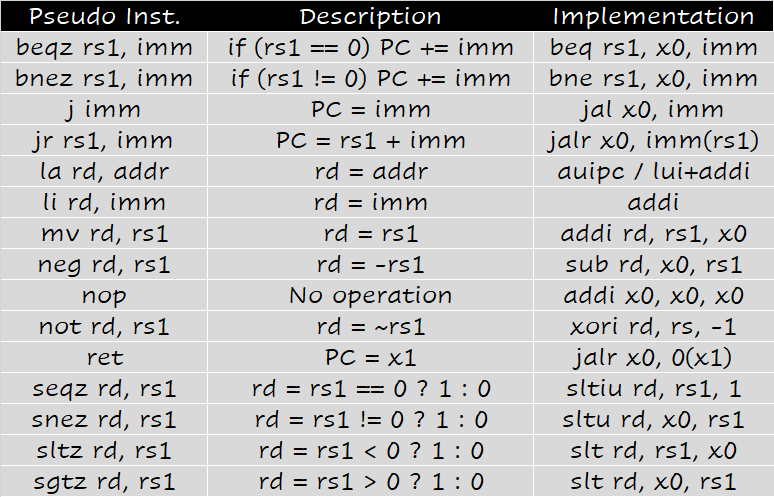
伪指令
过程（Procedure）或函数（Function）
调用过程Procedure Call Instructions flashcard
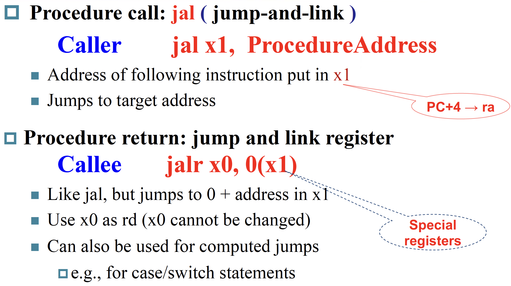
- jal与jalr
- jalr是基于【寄存器地址+12位立即数偏移量】
- jal是基于pc相对地址【20位立即数】，jal rd，offset
- 对于调用者：调用某个程序地址后，将返回地址（跳转的下一条地址PC+4）存入x1（ra）中
- 对于被调用者，x0无法被写入，表示不保存任何返回地址，仅作跳转。
调用过程中的寄存器Registers for procedure calling
Local Data on the Stack
Memory Layout
RICV-V指令格式 flashcard
指令编码32bit, 记其为机器码（Machine Code）。我们可以把每条指令当作一块块二进制数字构成的组合，而这单块的数字被称为字段（Field）。我们为字段赋予了一些名称，每个字段有不同的功能：
opcode：指令要做的运算，可用这个字段区分各种类型的指令格式(instruction format)funct3：额外的opcode字段funct7：额外的opcode字段rd：寄存器目标操作数，保存运算的结果rs1：第一个寄存器源操作数rs2：第二个寄存器源操作数immediate：立即数，即常数
根据不同的 opcode 我们可以将指令分为 6 种类型，它们的字段构成如下：
- R 型指令一般用于算术、逻辑运算
- I 型指令一般用于加载操作、涉及立即数的算术逻辑运算、
jalr指令- 因为寄存器的大小为 64 位，也就是说对于移位操作
slli，srli和srai，它们最多只能移位 64 位，因此移位操作中immediate字段只有后 6 位能实际被用来存储移位的步数，前 6 位用来存储额外的opcode字段（funct6） - 关于
jalr指令，如果跳转地址（立即数）过大，超过了 20 位，那么可以先用lui指令将高 20 位数字放入临时寄存器中，然后再用jalr指令跳转到地址剩余的低位数字(临时寄存器)上
- 因为寄存器的大小为 64 位，也就是说对于移位操作
- S 型指令一般用于存储操作
- U 型指令一般用于与高位立即数相关的操作
- 在大多数情况下，立即数不会很大（），能够直接存在指令中；但如果超过 12 位，RISC-V 会用
lui(load upper immediate) 指令来处理这类较大的立即数。 - 它可以加载立即数的高 20 位，将其放入寄存器中间的第 12 位到第 31 位，寄存器的低 12 位用 0 填充，高 32 位用第 31 位上的数字填充。
- 例如，要将 32 位立即数赋给寄存器，可以先用
lui指令将高 20 位赋给寄存器，之后用addi指令将剩余的 12 位加到寄存器中。
- 在大多数情况下，立即数不会很大（），能够直接存在指令中；但如果超过 12 位，RISC-V 会用
- SB 型指令一般用于条件分支语句
- 可表示的地址范围为 -4096-4094，且都是 2 的倍数（因为立即数第一位恒为 0）
- UJ 型指令一般用于无条件分支语句（
jal）rd用于存放链接地址（即返回地址）
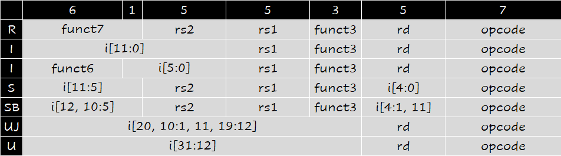
- 另外，为什么
SB和UJ不存立即数（也就是偏移）的最低位呢？（关注表格，可以发现只包括i[12:1]或者i[20:1]，缺失i[0]）因为，偏移的最后一位一定是 0，即地址一定是 2 字节对齐的，因此没有必要保存。
数组和指针
事实上，用指针访问数组元素比用索引访问数组元素更快一些。它们分别具有如下特点：
- 数组索引
- 需要根据数组基地址、当前索引和元素大小计算出数组元素的地址，而且每趟循环都需要更新和重新计算，有些麻烦
- 虽然从理论上来说效率不高，但实际上编译器已经为我们做了一定的优化，比如用移位运算替代乘法运算，避免在循环内进行数组地址计算等
- 指针
- 它直接指向内存地址（可以看到，在循环开始前就已经算好了），无需多余的计算步骤
例子
RISC-V 汇编语言来翻译一个用 C 语言写的冒泡排序函数
C 语言翻译成汇编语言步骤
- 为程序的每个变量分配相应的寄存器
- 为过程的主体部分书写代码
- 在过程调用期间保留要用的寄存器
swap函数
void swap(long long int v[], size_t k) {
long long int temp;
temp = v[k];
v[k] = v[k+1];
v[k+1] = temp;
}swap:
slli x6, x11, 3 // reg x6 = k * 8 -》变成byte字节地址
add x6, x10, x6 // reg x6 = v + (k * 8)
ld x5, 0(x6) // reg x5 (temp) = v[k]
ld x7, 8(x6) // reg x7 = v[k + 1]
sd x7, 0(x6) // v[k] = reg x7
sd x5, 8(x6) // v[k+1] = reg x5 (tmp)
jalr x0, 0(x1) // return to calling routinesort函数
void sort(long long int v[], size_t int n) {
size_t i, j;
for (i = 0; i < n; i++) {
for (j = i - 1; j >= 0 && v[j] > v[j + 1]; j--) {
swap(v, j);
}
}
}// Saving registers
sort:
addi sp, sp, -40 // make room on stack for 5 registers
sd x1, 32(sp) // save return address on stack
sd x22, 24(sp) // save x22 on stack
sd x21, 16(sp) // save x21 on stack
sd x20, 8(sp) // save x20 on stack
sd x19, 0(sp) // save x19 on stack
// Procedure body
// Move parameters
mv x21, x10 // copy parameter x10 into x21
mv x22, x11 // copy parameter x11 into x22
// Outer loop
li x19, 0 // i = 0
for1tst:
bge x19, x22, exit1 // go to exit1 if i >= n
// Inner loop
addi x20, x19, -1 // j = i - 1
for2tst:
blt x20, x0, exit2 // go to exit2 if j < 0
slli x5, x20, 3 // x5 = j * 8
add x5, x21, x5 // x5 = v + (j * 8)
ld x6, 0(x5) // x6 = v[j]
ld x7, 8(x5) // x7 = v[j + 1]
ble x6, x7, exit2 // go to exit2 if x6 < x7
// Pass parameters and call
mv x10, x21 // first swap parameter is v
mv x11, x20 // second swap parameter is j
jal x1, swap // call swap
// Inner loop
addi x20, x20, -1 // j for2tst
j for2tst // go to for2tst
// Outer loop
exit2:
addi x19, x19, 1 // i++
j for1tst // go to for1tst
// Restoring registers
exit1:
ld x19, 0(sp) // restore x19 from stack
ld x20, 8(sp) // restore x20 from stack
ld x21, 16(sp) // restore x21 from stack
ld x22, 24(sp) // restore x22 from stack
ld x1, 32(sp) // restore return address from stack
addi sp, sp, 40 // restore stack pointer
// Procedure return
jalr x0, 0(x1) // return to calling routine指令集架构
谬误
- 更多强大的指令会带来更高的性能
- 虽然更强大的指令意味着执行相同功能所需指令数更少，但同时也意味着这些指令会更加复杂，难以实现，这样反而影响所有指令的效率
- 直接用汇编语言编写的程序性能更高
- 在现代的处理器中，编译器可能比人脑更擅长将高级语言代码转换为性能更优的汇编语言代码
- 而且，对于人类来说，因为汇编代码量较大，所以会带来更多犯错的机会，且编写效率实在不高
- 指令集的向后兼容意味着无需改变现有的指令集
- 以 x86 为例，虽然它做到了向后兼容，但它的指令数还是呈上升趋势
- 用字节表示地址的机器内，连续的字地址的间距不是 1 而是 4（字节）
- 一个地址只能放一个字节
- 双字地址间距就是8字节
- 使用指向在定义过程外的自动变量的指针
- 典型例子：某个过程返回一个指向局部数组的指针，但这个过程在返回后就没了，包括这个局部数组，因此这个指针指向一个没有任何意义的地方，如果动用这个指针，很可能会让整个程序崩溃
指令集架构 instruction set architecture flashcard
目前世界上主流的 ISA 主要分为两大类：
- CISC (复杂指令集)：一条指令可以完成很复杂的操作。
- x86 电脑、笔记本、服务器
- RISC (精简指令集)：指令都很简单、统一，通过组合简单指令来完成复杂任务。
- RISC-V
- ARM 手机 平板 嵌入式设备 苹果电脑
- MIPS
当下计算机建立在两个关键原则（即存储程序概念，Stored-Program Concept）：
- 指令用数字来表示
- 程序就像数字一样存储在内存中，可用来被读取或写入
MIPS
- 32 位指令
- 32 个通用寄存器，其中一个寄存器的值始终为 0
- 只能通过加载和存储指令来访问内存数据
- 没有能够批量加载 / 存储多个寄存器的指令
- 寻址模式适用于各种大小的数据
RISC-V 和 MIPS 的不同之处有：
- 条件分支（除了相等和不等）：
- RISC-V 仅仅比较两个寄存器的大小，而 MIPS 还会用一个寄存器存储比较结果（1 或 0，对应真值）
- MIPS 只有“小于”分支指令，该指令有符号数（
slt）和无符号数（sltu）版本 - 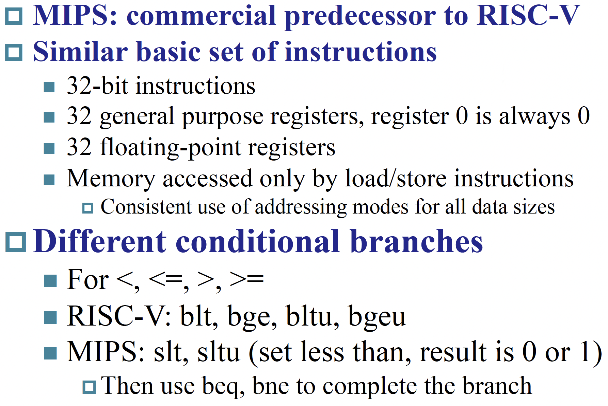
- 指令格式的区别

x86
8086 指令集仅支持字节（8 位）和字（16 位，注意 RISC-V 的字是 32 位）类型的数据，而 80386 增加了 32 位地址和数据（双字，注意 RISC-V 的双字是 64 位）。
x86 指令与 RISC-V 的不同之处在于：
- x86 指令的算术和逻辑指令中，有一个操作数同时充当源和目标；而 RISC-V（以及 MIPS）会将源寄存器和目标寄存器区分开来
- x86 指令的其中一个操作数可以是内存，下面的表格展示了 x86 中所有可能的操作数搭配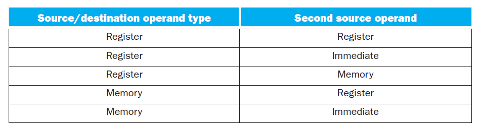
寄存器
80386 指令集有 14 个寄存器，如下图所示：
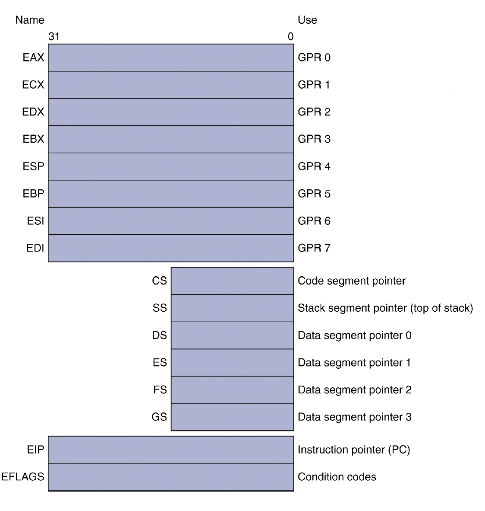
寻址模式
80386 的寻址模式如下图所示：
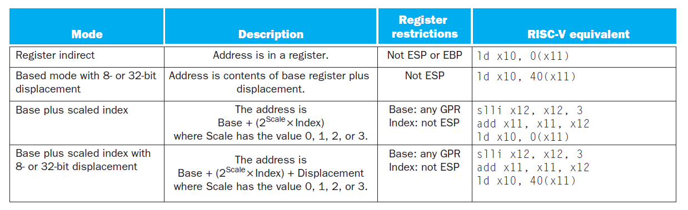
指令格式
下图为典型 x86 指令格式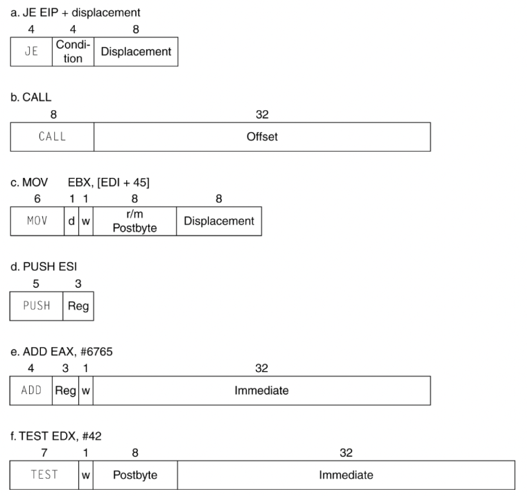- 每条指令的开头（左侧）指明了指令要做的操作
- 有些指令存在一个
Postbyte字段，它用来指明寻址模式
x86 的整数指令有以下几类： - 数据传送指令
- 算术和逻辑指令
- 控制流
- 字符串指令
分别对应的常见指令有：
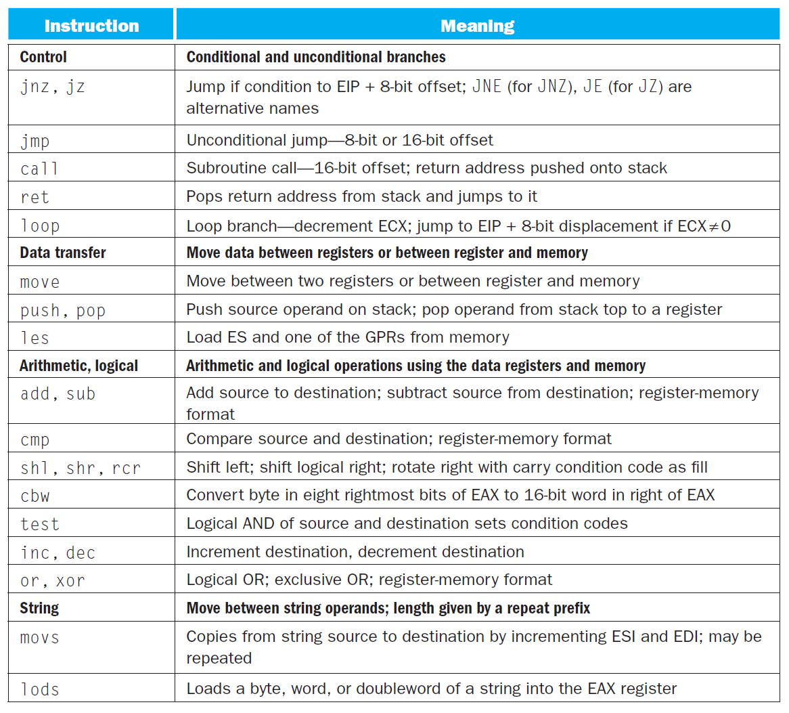
Translating and starting a program
一个 C 语言的程序（源代码）转化为存储在内存中的一个文件的过程
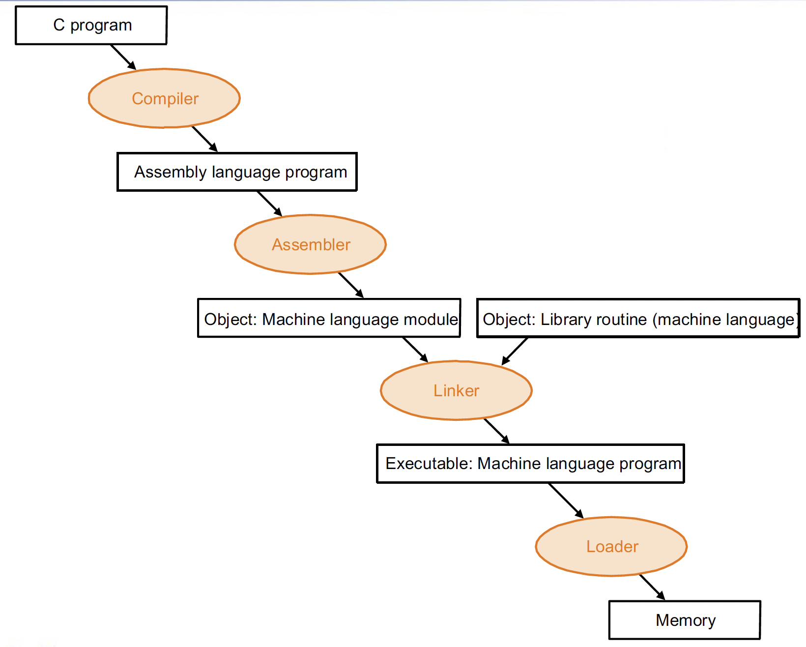
- 编译器 (Compiler)：高级编程语言 → 汇编语言
- 有的编译器兼具汇编器的功能
- 汇编器 (Assembler)：
- 伪指令 → 指令
- 伪指令(Pseudo Instruction)：可以理解为汇编指令的扩展（或者缩写），形式上看似指令，而实际上并不存在这种指令，但汇编器会将其自动转化为实际存在的指令
- 可接受各种进制的数
- 用符号表(symbol table) 存储标签名称和内存地址的对应关系，便于将标签转化为实际的地址
- 基本的功能：汇编语言 → 机器码，即汇编程序 → 目标文件(Object File)。在 UNIX 系统中，目标文件包含以下内容：
- 目标文件头 (Object File Header)：描述目标文件中其他区域的大小和位置
- 文本段 (Text Segment)：包含机器码
- 静态数据段 (Static Data Segment)：包含程序生命周期中分配的数据（在 UNIX 中这个区域同时存放静态和动态数据）
- 重定位信息 (Relocation Information)：根据程序被加载至内存的绝对地址来区分指令和数据
- 符号表 (Symbol Table)
- 调试信息 (Debugging Information)：简要描述模块的编译情况，使调试器能够将机器指令和 C 源文件关联起来，且能够读取其中的数据结构
- 伪指令 → 指令
- 链接器 (Linker)
- 对于多文件的编译，采取的做法是先编译、汇编单个的文件，然后将这些机器语言程序链接起来，这样可以尽可能减少重编译和重汇编的情况
- 工作流程：
- 将代码和数据模块以符号化的形式存在内存中
- 弄清数据和指令标志对应的地址
- 补充好内部和外部的引用
- 经链接器加工后，最终生成一个可执行文件 (Executable File)，它与目标文件的区别在于后者存在不确定 (Unresolved) 的引用
- 加载器 (Loader)：将可执行文件放入内存或磁盘中，工作流程为：
- 读取可执行文件头，得到文本段和数据段的大小
- 创建一个指向足够容纳文本和数据的空间的地址
- 将可执行文件的指令和数据拷贝到内存中
- 将主程序的参数（如果有的话）放入栈中
- 对寄存器进行初始化操作，并将栈指针指向第一个空闲的位置上
- 跳转到启动例程，将参数拷贝到参数寄存器中，并调用程序的主例程。让主例程返回时，启动例程中止整个程序，附带
exit系统调用
Dynamic Linking
前面介绍的链接方法属于静态链接，虽然它能快速调用库函数，但它具有以下缺陷：不能及时更新库函数，会一次性加载所有库函数（即使很多库函数没被用到）。因此我们更多地会用到动态链接库(Dynamically Linked Libraries, DLL) 来克服这些缺陷——这种库可以在程序运行时被链接到程序里。
动态链接库有如下特征：
- 需要可重定位的过程代码
- 能够避免由静态链接获取所有库函数带来的占用存储空间过大的问题
- 能够自动获取最新版本的库
Lazy Linkage
在原始版本的 DLL 中，程序和库都需要保留额外的信息，用于定位非局部的过程；加载器会运行一个动态的链接器，使用这些额外的信息找到合适的库并更新所有的外部引用。这种 DLL 的缺点是它仍然会一次性加载所有库函数。一种改进方法是使用懒过程链接(Lazy Procedure Linkage) 版本的 DLL，它能保证只有当程序调用库函数时，对应的库才会被链接到程序里。下图展示了这种版本的 DLL：
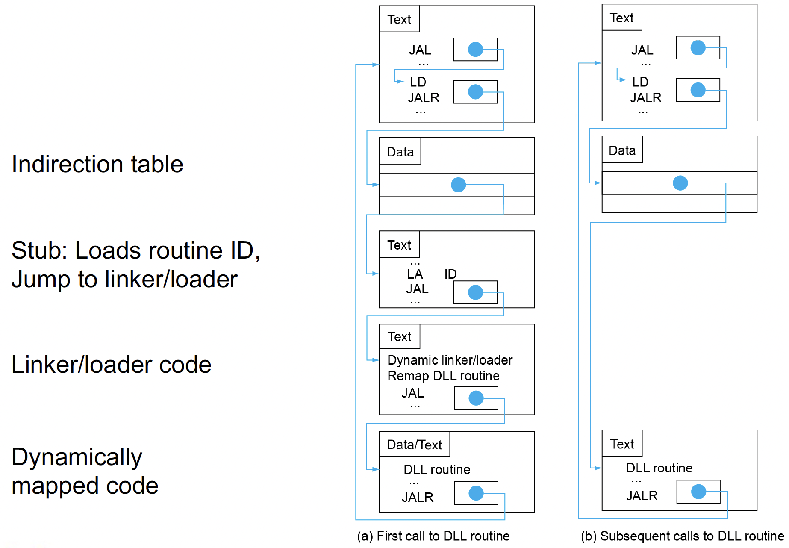
数据类型
go
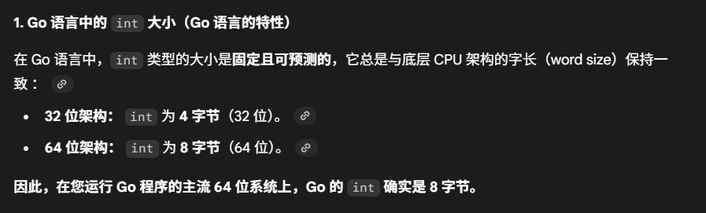
c
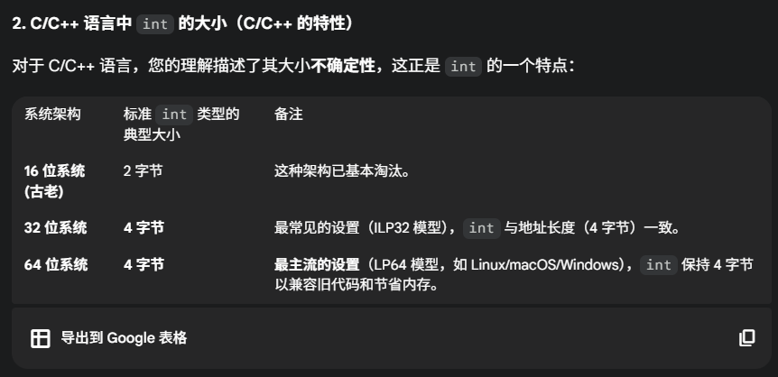
无论是 32 位还是 64 位系统，long long 类型的大小都是 8 字节
long 在 32 位系统上是 4 字节，在 64 位系统上是 8 字节
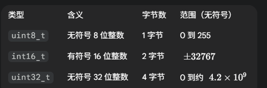